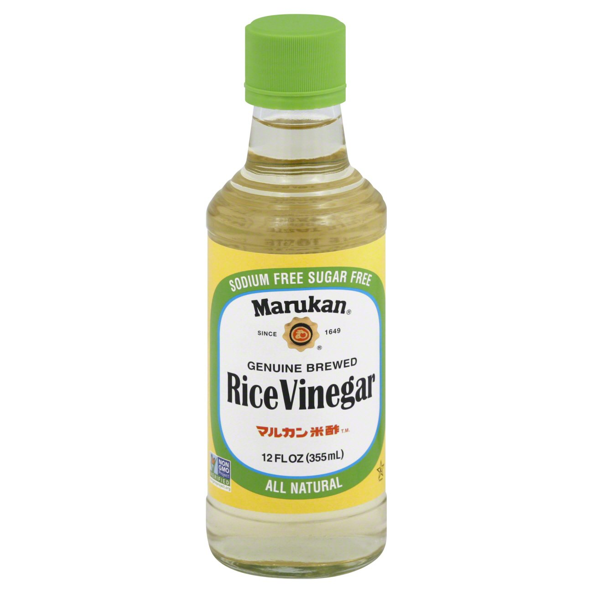
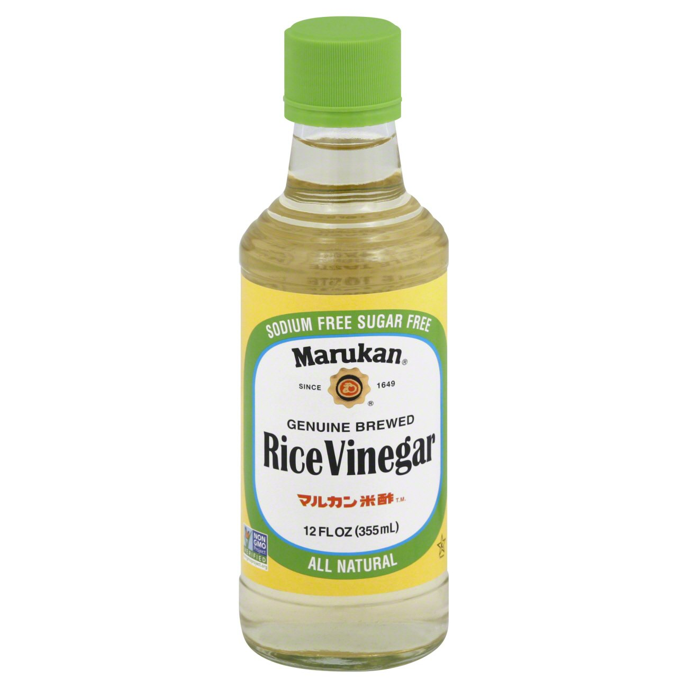

Baked Potato
Origin: Peru
Category: Main Dish, Comfort Food

These twice-baked potatoes work perfectly as a simple, crowd-pleasing entrée or as a rich side dish. It is believed that baked potatoes originate from South America, or more specifically, Peru. The Inca Indians in Peru were said to be the first to originally cultivate potatoes and when the Spanish conquistadors conquered Peru, they brought the potato to Europe.
Recipe Ingredients
- 4 large baking potatoes
- 8 slices bacon
- 1 cup sour cream
- ½ cup milk
- 4 tablespoons butter
- ½ teaspoon salt
- ½ teaspoon pepper
- 1 cup shredded Cheddar cheese, divided
- 8 green onions, sliced, divided
Recipe Steps
- Gather ingredients and preheat the oven to 350 degrees F (175 degrees C).
- Bake potatoes in the preheated oven until tender, about 1 hour, depending on the size of your potatoes. Set potatoes aside until cool enough to handle.
- Meanwhile, place bacon in a large, deep skillet. Cook over medium-high heat until evenly brown. Drain, crumble, and set aside.
- Slice potatoes in half lengthwise and scoop the flesh into a large bowl; save skins.
- Add sour cream, milk, butter, salt, pepper, 1/2 cup cheese, and 1/2 of the green onions to the potato; mix with a hand mixer until well blended and creamy.
- Spoon the mixture into the potato skins; top each with remaining cheese, green onions, and bacon.
- Return potatoes to the preheated oven and continue baking until the cheese is melted, about 15 minutes. Serve Hot!
Additional Food Images


Sanjida Eva
Sushi Bake
Origin: Asia
Recipe Source: Own
Category: Main Dish, Comfort Food

Do you want easy, quick way to enjoy sushi without having to do all of the work? Try to make our sushi bake, which takes 10 minutes to assemble and 20 minutes to bake in the oven. Our recipe feeds 8 people.
Recipe Ingredients
- 1 avocado
- 1/2 cup soy sauce
- 2 cups of rice
- 1 tablespoon of rice vinegar
- 3 tablespoons of mayo
- 1 8 oz package of imitation crab
- 1 medium piece of salmon
- 1 cucumber
- 3 tablespoons of sriracha
Recipe Steps
- Preheat oven to 350 degrees
- Make rice. Mix rice vinegar into rice after it is cooked
- Lay out all of the rice at the bottom of a large baking dish
- Lay out the imitation crab and cucumber on top of the rice
- Mix the imitation crab and 2 TBSP mayo into a crab salad
- Smear the crab salad onto the next layer
- Slice the avocado and lay those on the top of the dish
- Pour the rest of the mayo and sriracha on top
- Bake for 20 minutes
Additional Food Images

 

Joshua Vijayasegar and Ethan Tai
Shrimp Scampi
Origin: Italy
Category: Main Dish

Shrimp scampi is a classic Italian-American delight, where succulent shrimp meet a medley of garlic, butter, and white wine. Sautéed to pink perfection, the shrimp mingle with a fragrant blend of garlic and red pepper flakes. A drizzle of white wine and a squeeze of lemon create a luxurious sauce, embracing the dish's linguine base. With a sprinkle of parsley, it's a harmonious, flavorful masterpiece that exemplifies both simplicity and taste.
Recipe Ingredients
- 2 tablespoons butter
- 2 tablespoons extra-virgin olive oil
- 4 garlic cloves, minced
- ½ cup dry white wine or broth
- ¾ teaspoon kosher salt, or to taste
- ⅛ teaspoon crushed red pepper flakes, or to taste
- Freshly ground black pepper
- 1¾ pounds large or extra-large shrimp, shelled
- ⅓ cup chopped parsley
- Freshly squeezed juice of half a lemon
- Cooked pasta or crusty bread
Recipe Steps
- In a large skillet, melt butter with olive oil.
- Add garlic and sauté until fragrant, about 1 minute.
- Add wine or broth, salt, red pepper flakes, and plenty of black pepper and bring to a simmer.
- Let the wine reduce by half, about 2 minutes.
- Add shrimp and sauté until they just turn pink, 2 to 4 minutes depending upon their size.
- Stir in the parsley and lemon juice and serve over pasta or accompanied by crusty bread.
Additional Food Images


Anna Torell